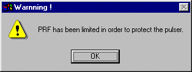
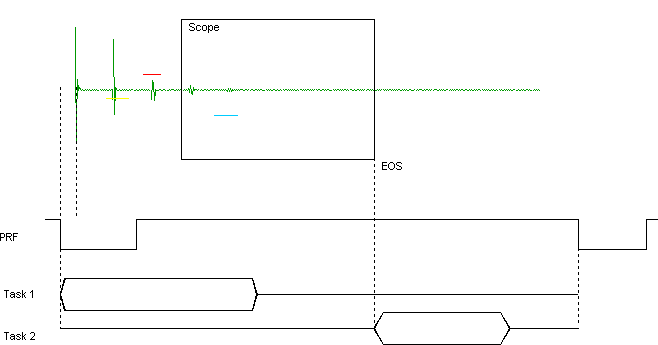
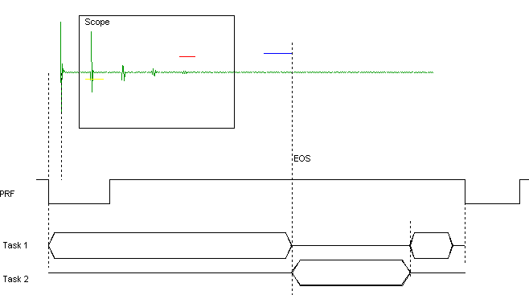
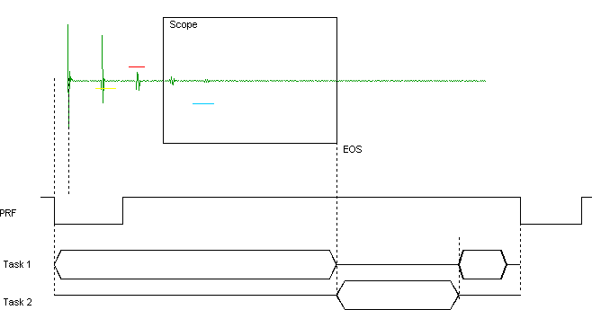
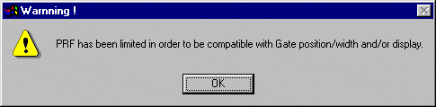
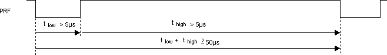

PRF_rules.htm
Update
24 January 2008

PRF Limitations
Two kinds of
limit must be taken into consideration:
-
Limit for protecting
the Pulser,
-
Timing limitation.
Those
limitations are controlled by the software when set on internal PRF source
“Internal Synchro”.
When you have
to use an external PRF and set the software on “External Synchro”, you have to
control by yourself the timing limitation in order to get results properly.
USPC board
always tries to protect the pulser. The board checks the pulser current and
automatically disables some pulses if necessary (a power alarm is then
returned).
USPC board also
disables some pulses if the PRF is too high to perform all calculations (a PRF
alarm is then returned).
Limit
to protect the Pulser:
To protect the PC card from severe
damages, a transmitter control is made each time you modify one of the
following parameters: power/frequency/PRF; you might not be allowed to modify
one of them as you wanted to. A Warning message will tell you that the PRF
selected has not been taken into account.
|
 (Prf_rules_picture5_us.gif) |
The following formula is used for this control :
The voltages are specified for a load of 50 Ohms. The pulse falling time is 5 ns. |
Timing
limitation:
Between each pulse, the USPC
board has to do two main tasks:
1.
The first task calculates and updates
the results of previous measurements (TOF and/or WT)
2.
The second task starts getting and
storing all data of current pulse at end of scanning (EOS) position.
The time between each pulse
(PRF) must be greater than time addition of first and second tasks.
End of scanning (EOS) is
determined by the farthest position of end of gates, end of DAC and end of
The first task can be
interrupted by the second task at EOS position. In this case, the first task
restarts when second is finished.
|
Example 1: Task 1 finished before End Of Scanning
(EOS)  (Prf_rules_picture1_us.gif) |
|
Example 2 : Task 1 interrupted by EOS event  (Prf_rules_picture2_us.gif) |
|
Example 3: Second example where Task 1 is
interrupted by EOS event  |
|
|
Time of
first task (Tt1)
The time for the first task
depends on the number of Gate selected for TOF treatments and data acquisition
mode.
Ttreatment = 9µs * number of
gate using TOF treatment + number of gates using WT treatment * (10 µs + 10 µs
/ number of gates using WT treatment)
Examples:
If you select TOF for gates
IF and 2 and WT for gate 1
Ttreatment >= 9 µs * 2 + 1 * (10 µs + 10 µs / 1) = 38
µs
If you select TOF for gates
IF, 1 and 2
Ttreatment >= 9 µs * 3 = 27 µs
If you select WT for gates
IF, 1 and 2
Ttreatment >= 3 * (10 µs + 10 µs / 3) = 40 µs
Tt1 depends on acquisition
mode too
|
Acquisition
mode |
All
boards |
|
No acquisition |
Tt1 =
Ttreatment |
|
C-scan
acquisition |
Tt1 =
MAX(16 µs, Ttreatment) |
|
A-scan
acquisition |
Tt1 =
MAX(35 µs, Ttreatment) |
|
A-scan HR
acquisition |
Tt1 =
MAX(10 µs, Ttreatment) |
Time of
second task (Tt2)
The time of the second task
depends on type of board and data acquisition mode.
|
Acquisition
mode |
All
boards w or w/o MUX low version PCMUX3108B |
With MUX
High version PCMUX3108H Add on: |
With MUX High version + DAC PCMUX3108H+ Add on: |
Only If board is SLAVE Add on: |
Add
on Time for storing A-scan data |
|
No
acquisition |
20 µs |
+4 µs |
+46 µs |
+ 5 µs |
- |
|
C-scan
acquisition |
20 µs |
+4 µs |
+46 µs |
+ 5 µs |
- |
|
A-scan
acquisition |
20 µs |
+4 µs |
+46 µs |
+ 5 µs |
40.96µs
(*) |
|
A-scan HR
acquisition |
0 µs |
Not
allowed |
Not
allowed |
+ 5 µs |
10 µs +
0.08µs * number of points of A-scan (*) |
Examples:
If you use an USPC3100LC
board and you get acquisition of C-scan data, then:
Tt2min
>= 20 µs
If you use a PCMUX3108HC/HC+
unit and you get acquisition of C-scan data, then:
Tt2min >= 20 µs + 4 µs + 46 µs = 70 µs (with
DAC enabled)
Tt2min >= 20 µs + 4 µs = 24 µs (without DAC
enabled)
If you use a PCMUX3108HA/HA+
and you get acquisition of A-scan data then:
Tt2min >= 20 µs + 4 µs + 46 µs + 40.96 µs =
110.96 µs (with DAC enabled)
Tt2min >= 20 µs + 4 µs + 40.96 µs = 64.96 µs
(without DAC enabled)
If PRF is not compatible with Gate or
A-Scan display time, the following message appears:

(Prf_rules_picture6_us.gif)
If PRF is not compatible with
data acquisition process, then an error sign is returned by PCXUS_ACQ_CONFIG
function.
Others
timing consideration:
1.
Special consideration when high
resolution is switched ON:
·
PRF time must be greater or equal to
2 * EOS + Tt2
·
EOS ≤ 300 µsec
2.
When using an external trigger, you
have to respect Tt1 and Tt2 times and the following timing

(Prf_rules_picture4_us.gif)
(*) Times measured on DELL
XPS B800 - PIII 800 MHz - 128 Mo RAM - Windows 2000.